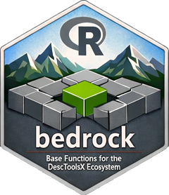

Audit the Names of a Package Against the Design Rules
Source:R/auditNames.R
auditNames.RdChecks the exported functions of an installed package, their arguments and the values of their enumerated arguments against the naming rules of the suite. Meant to run as a test in every package, so that a name which breaks a rule is found when it is introduced and not in a review.
Arguments
- package
character string, the name of an installed package.
- exceptions
character vector of findings to accept, each written as the
keyof the result:"fun"for a function name,"fun(arg)"for an argument and"fun(arg = \"value\")"for an enumerated value. An exception that matches nothing is reported in the attribute"unused", so that the list cannot outlive its reasons.
Value
a data frame with one row per finding and the columns
package, fun, arg (NA for a finding on the function name),
rule, detail and key, the form in which the finding is named
in exceptions. It has no rows if the package complies. The
attribute "unused" holds the exceptions that matched no finding.
Details
The rules checked, with the label used in the column rule:
camelCaseexported functions and arguments are written in lowerCamelCase. A dot is kept in S3 methods, in coercion generics
as.<Class>that really dispatch, and in argument names that are part of the shared vocabulary (na.rm,conf.level,sig.level, ...).acronymonly
CI,QQ,XY,ECDF,SEandADkeep their capitals inside a name,GCDandLCMas whole names. Every other acronym is written like a word:Rgb,Url,Html. As arguments,FUN,R,N,SandXare capitals by convention.collisiona function whose name is taken by
base,stats,graphics,utilsordplyrcarries the suffixX. A name counts as taken if it exists there, or if it differs from one only in the case of the whole word (iqragainstIQR()). An internal capital makes a name of its own:combN()is notcombn().suffixXand no function carries it without such a collision.
dotExportno function is exported with a leading dot, the graphics helpers of the plotting framework excepted.
forwardedan argument name taken over from another package (
ignore.case,useNA,all.inside, ...) is kept only where the value is passed on to another function.replacednames the rules have replaced:
alpha(sig.level),seed(the caller usesset.seed()),pkg(package),funin an exported function (FUN),dat(data),grp(groups),w(weights),level,colorandcols(col),obsandresp(ref), the prefixnumfor a count (n), the suffixArgsfor a list of arguments, andgandhorizontalin plot functions (groups,horiz).enumValuethe values of an enumerated argument are lower case, words joined by a hyphen (
"wald-cc"). Values that belong to the function they are passed on to, such as"two.sided"or the names in p.adjust.methods, are left alone. A value that names an element of the result (which = "tauB"returning$tauB) follows the rule for results instead; the audit cannot see that and reports it, so such values are listed as exceptions.
Arguments of an S3 method that its generic defines are not checked:
print.foo(x, ...) and predict.foo(object, newdata, ...) are given
by the generic. Re-exported functions are skipped altogether.
What the audit cannot see is a word boundary that was never written:
maxlen and nlow are single lower case words to it. Such names are
found by reading, not by this function.
See also
Other pkg.funinfo:
funArgs(),
funCalls(),
funKeywords(),
funList(),
rdLabels(),
rdTitle()
Examples
res <- auditNames("bedrock")
res[, c("fun", "arg", "rule", "detail")]
#> fun arg rule
#> 1 isNA <NA> acronym
#> 2 checkConfLevel allowNA acronym
#> 3 coalesceX method enumValue
#> 4 coalesceX method enumValue
#> 5 coalesceX method enumValue
#> 6 funArgs fun replaced
#> 7 funCalls fun replaced
#> 8 moveAvg endrule enumValue
#> 9 withSeed seed replaced
#> detail
#> 1 NA is not on the list of abbreviations; write it as a word
#> 2 NA is not on the list of abbreviations; write it as a word
#> 3 enumerated values are lower case, words joined by a hyphen
#> 4 enumerated values are lower case, words joined by a hyphen
#> 5 enumerated values are lower case, words joined by a hyphen
#> 6 use FUN
#> 7 use FUN
#> 8 enumerated values are lower case, words joined by a hyphen
#> 9 use none - the caller uses set.seed()
# as a test: no findings beyond the documented exceptions, and no
# exception without a finding
accepted <- c("isNA" = "NA is R's own constant, not an acronym")
res <- auditNames("bedrock", exceptions = names(accepted))
attr(res, "unused")
#> character(0)